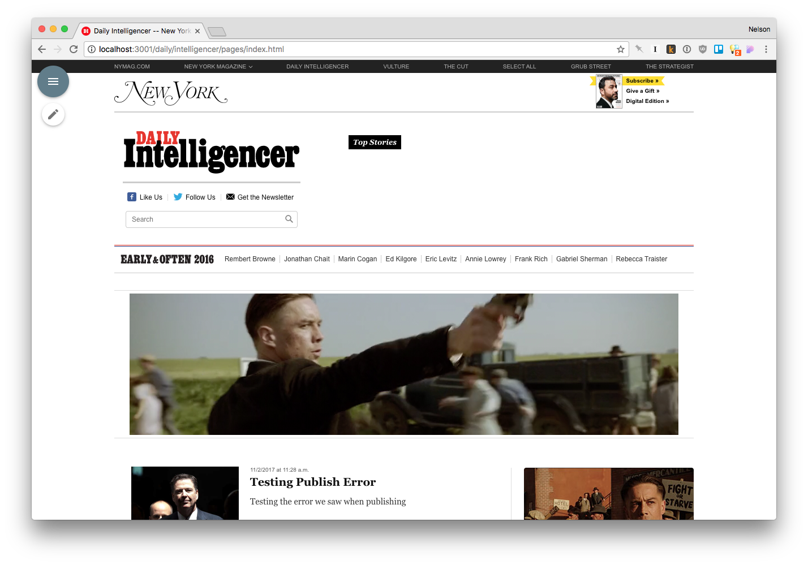
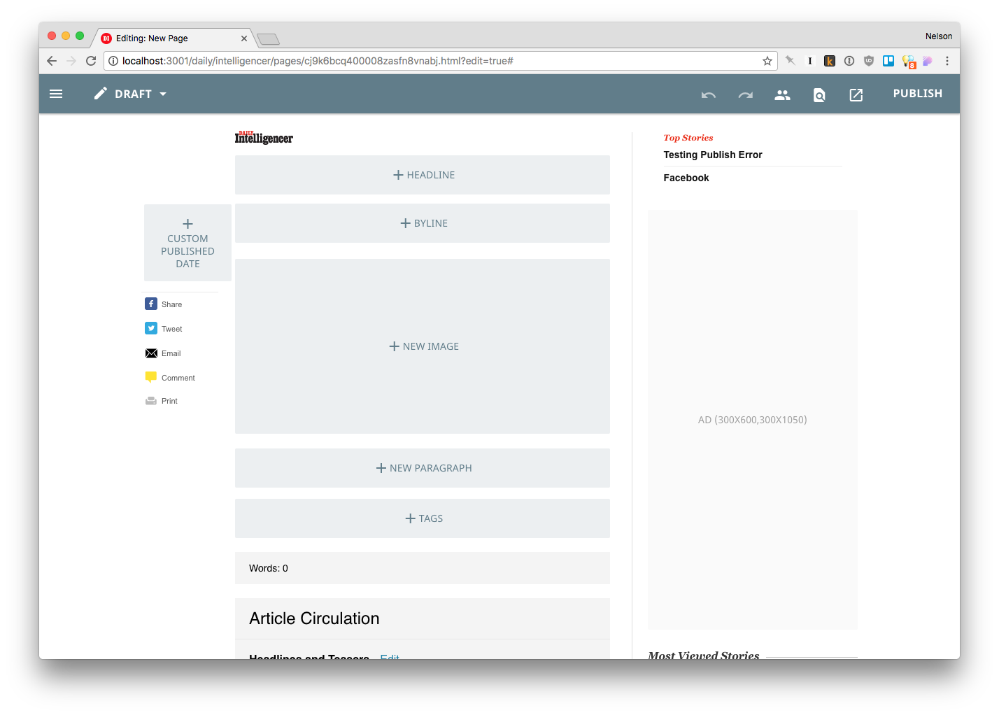
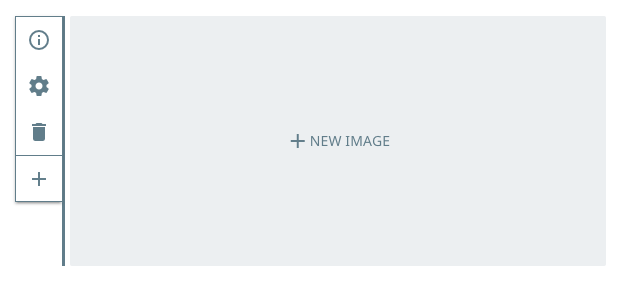

The Kiln UI
When viewing Clay pages while logged in, Kiln provides two separate experiences: View Mode and Edit Mode.
View Mode
This mode displays pages as they would appear on the public-facing site. Client-side controllers run, ads fire, and embeds are fully functional. Kiln's entire UI is relegated to two small buttons in the upper left hand corner: The Clay Menu button allows you to open up the Clay Menu, while the Edit Page button reloads the page in Edit Mode.

Edit Mode
This mode displays the page without any client-side controllers, allowing Kiln to modify and re-render components as you're editing them. A toolbar displays at the top of the screen, with various buttons and actions available.
- The Clay Menu button opens up the Clay Menu, allowing you to search through pages, create new pages, and (if you're an admin) modify Clay users
- The Page Status displays the current state of the page (Draft, Scheduled, Published, or published with Unpublished Changes), and allows you to go back to View Mode
- The Undo and Redo buttons (which are enabled if you can perform those actions) allow you to step backwards and forwards through changes in your current editing session
- The Contributors, Find on Page, Preview, and Publish (or Republish, if you've already published the page) buttons toggle drawers on the right side of the page
- Contributors shows the users who have edited this page, and allows you to add other users to the page. This will make the page show up in their My Pages list in the Clay Menu
- Find on Page displays lists of visible components (components that live in the
<body>and are not visually hidden), allowing quick search and navigation of components on the page. It also has tabs for components in the<head>as well as lists of hidden (invisible) components - Preview allows you to preview the current page in various form factors (for small, medium, and large screens), as well as provides a shareable link to allow others to preview this page before you publish it
- Publish determines the health of the page (its ability to be published, based on built-in and custom validation rules) and allows you to Publish Now or Schedule a page to be published in the future. It also allows you to set a Custom URL, which is useful for index pages and other pages that do not automatically generate URLs

Component Selectors
Attached to every component is a component selector, which displays when the component is hovered over or clicked. Depending on the component and where it exists on the page, the selector may have these buttons:
- Info - provides component information taken from the
_descriptionin the component's schema - Settings - opens the component settings form, if it exists
- Remove - removes the component, if it exists in a component list
- Add Component - adds a component, if the current component exists in a component list
- Duplicate Component - holding Ctrl or ⌘ will change the Add Component button into a Duplicate Component button, allowing efficient adding of the same component multiple times
